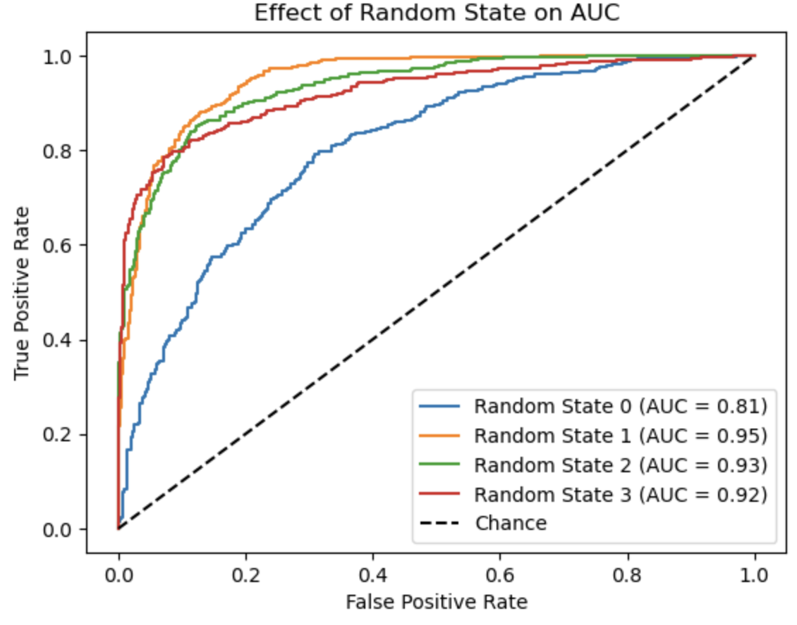
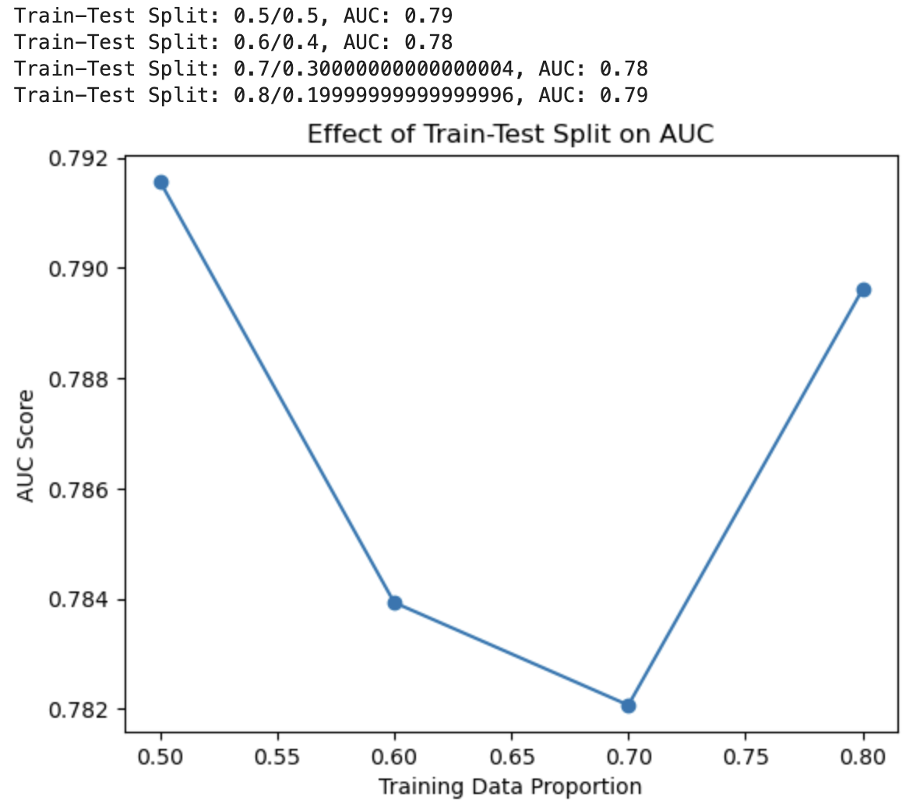
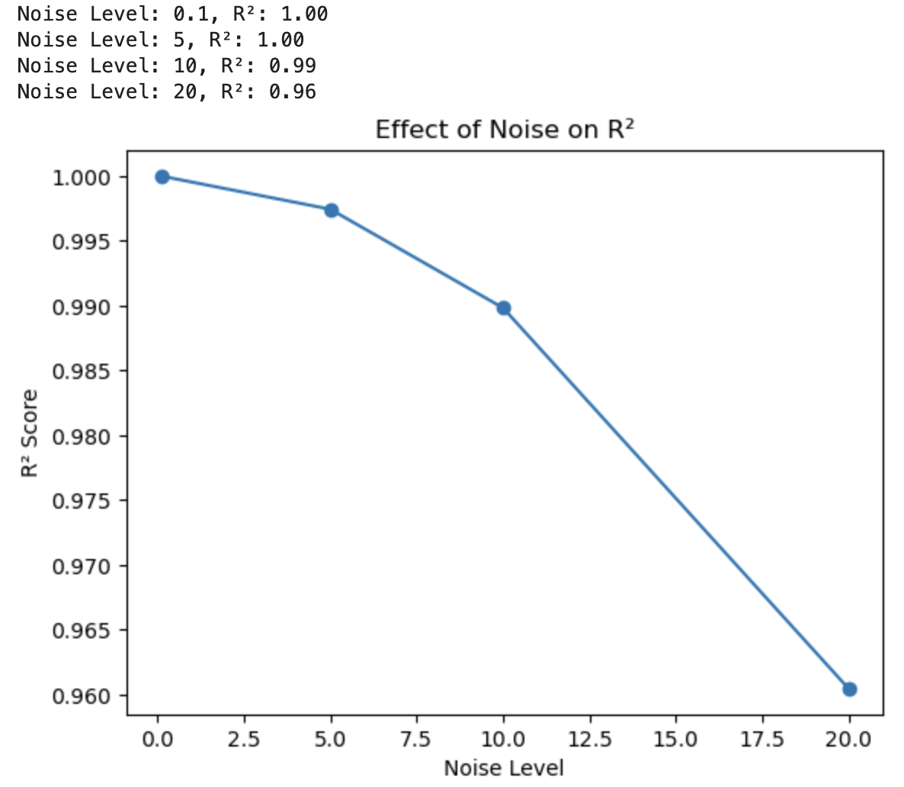

The confusion matrix can help us understand classification models by showing the true positives, false positives, true negatives, and false negatives.
In this assignment we were asked to adjust variables to understand their impact on AUC and R2 errors. The make_classification function to generate synthetic datasets. I changed the random_state to 1, 2, and 3 to observe variations. These changes altered the dataset structure (including feature distributions and class separability) which directly influenced the classifier's performance. Specifically, when the classes were less separable, the AUC decreased. On the other hand, more separable data led to higher AUC values.
I plotted these attempts using the following code:
from sklearn.datasets import make_classification
from sklearn.linear_model import LogisticRegression
from sklearn.metrics import roc_auc_score, roc_curve
import matplotlib.pyplot as plt
# Function to evaluate AUC with different random states
def evaluate_random_state(random_state):
X, y = make_classification(n_samples=1000, n_features=20, n_informative=15, n_redundant=5,
random_state=random_state, class_sep=1.0)
model = LogisticRegression()
model.fit(X, y)
y_prob = model.predict_proba(X)[:, 1]
auc = roc_auc_score(y, y_prob)
fpr, tpr, _ = roc_curve(y, y_prob)
plt.plot(fpr, tpr, label=f"Random State {random_state} (AUC = {auc:.2f})")
return auc
# Test multiple random states
plt.figure()
for state in [0, 1, 2, 3]:
evaluate_random_state(state)
plt.plot([0, 1], [0, 1], 'k--', label="Chance")
plt.legend()
plt.title("Effect of Random State on AUC")
plt.xlabel("False Positive Rate")
plt.ylabel("True Positive Rate")
plt.show()I then adjusted the train-test split ratio to explore its influence on AUC. When I increased the proportion of training data, the model's AUC generally improved. However, smaller test sets sometimes resulted in more difficult evaluations. 
I wrote the following code:
from sklearn.model_selection import train_test_split
# Generate data and evaluate train-test splits
X, y = make_classification(n_samples=1000, n_features=20, n_informative=15, n_redundant=5, random_state=0)
train_test_ratios = [0.5, 0.6, 0.7, 0.8]
auc_scores = []
for ratio in train_test_ratios:
X_train, X_test, y_train, y_test = train_test_split(X, y, test_size=1-ratio, random_state=0)
model = LogisticRegression()
model.fit(X_train, y_train)
y_prob = model.predict_proba(X_test)[:, 1]
auc = roc_auc_score(y_test, y_prob)
auc_scores.append(auc)
print(f"Train-Test Split: {ratio}/{1-ratio}, AUC: {auc:.2f}")
plt.plot(train_test_ratios, auc_scores, marker='o')
plt.title("Effect of Train-Test Split on AUC")
plt.xlabel("Training Data Proportion")
plt.ylabel("AUC Score")
plt.show()For regression models, I worked with the make_regression function to generate data and evaluated performance using R2. Initially, the notebook provided results for a dataset with minimal noise. When I increased the noise parameter, R2 values declined. This indicates that the model's predictions were less aligned with the true outcomes due to the added variability in the data.
For this, I wrote the following code:
from sklearn.datasets import make_regression
from sklearn.linear_model import LinearRegression
from sklearn.metrics import r2_score
# Generate regression data with varying noise
noise_levels = [0.1, 5, 10, 20]
r2_scores = []
for noise in noise_levels:
X, y = make_regression(n_samples=1000, n_features=5, noise=noise, random_state=0)
model = LinearRegression()
model.fit(X, y)
y_pred = model.predict(X)
r2 = r2_score(y, y_pred)
r2_scores.append(r2)
print(f"Noise Level: {noise}, R²: {r2:.2f}")
plt.plot(noise_levels, r2_scores, marker='o')
plt.title("Effect of Noise on R²")
plt.xlabel("Noise Level")
plt.ylabel("R² Score")
plt.show()